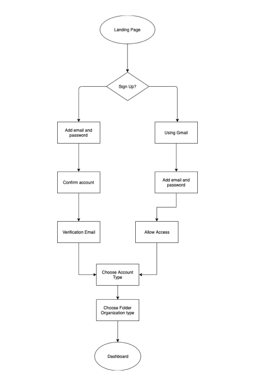

Aldea Hub
Role UX/UI Designer, Visual Designer, UX Research
Tools Figma, UsabilityHub
Deliverables User Surveys, Personas, Competitive Analysis, User Stories & Flows, Paper Prototype, Wireframes, User Testing, Visual Design
View Prototype
Problem
The Latinx community lacks representation in tech and there are very few digital communities that provide resources to advance in this sector.
Solution
Aldea Hub; an online community and platform on a mission to help the Latinx community thrive in tech by offering resources, mentorship, and job opportunities.
Research
User Survey
The results for the survey further validate the assumption that there is a big need for a platform that helps the Latinx community thrive in tech. It’s interesting to see the importance of Latinx students to have access to entry-level and internship opportunities. This survey informs how to proceed when it comes to the main focus of the platform, which is clear that it would be providing access to careers and community. I'm curious to see the results, once interviews are done, about the specific topics of interest within the resources.
Competitive Analysis
Each of these apps has different advantages according to what the community would need. When it comes to the Latinx community in tech, Techqueria seems to be superior because of their offerings and focus on the Latinx community. If the user is looking for a design-centric community, Latinxs Who Design seems like the best choice. Lastly, Diversify Tech has a broader approach since they cater to underrepresented communities in general, with a big focus on development. The results of this analysis prove that there is an opportunity for a new platform focused that covers the community needs for Latinx in tech.
User Personas
Based on the user surveys, I was able to identify three types of users: the skill builders, the career transitioners, and the non members.

Christy T.
Ux Designer
Age 29/Location Austin,TX
Christy is a Conversational UX Designer based in Austin, Texas. She expressed some hesitation about joining a Latinx community in tech because of the lack of collaboration between communities. She is open to joining a community that is interesectional and diverse.
Manu V.
Art Director
Age 34/Location Brooklyn, NY
Manu is a freelance Art Director/Designer. He works mostly in advertising agencies and design studios. He also enjoys designing movie posters, event flyers, and brand guidelines, to name a few. He says that when you think about the tech industry, you automatically think of the Silicon Valley type of vibe and they’re not well-known for their Latinx community.
Kim A.
Ux Designer
Age 29/Location New York, NY
Kim is currently transitioning to a career in UX Designer. She has a photo and graphic arts/ emerging media background. She currently works at Meero, where she is developing tools for freelancers to help manage their businesses, clients and networking goals. She wants to connect, share information, guide and bond with a community that is similar to her as a Latina.
Information Architecture
User Flows & User Stories
For the user stories, I focused on what survey participants and personas prioritized. I compiled a list of high and medium priorities to reach the minimum viable product. Based on the user stories, I created user flows to show how they will complete these tasks.
| User Type | Action | Priority |
|---|---|---|
| As a new user | Choose initial folder organization | High |
| As a new user | Choose membership type | High |
| All users | Upload content (images,pdfs, documents) | High |
| All users | Share files with others | High |
| All users | Collaborate with others in real time on documents, spreadsheets and notes | High |
| All users | Share folders with others | High |
| All users | Create documents | Medium |
| As a new user | Sign up | Low |
| As a returning user | Sign in | Low |

Wireframes
In this phase, I gathered all insights from research and surveys and went back to the drawing board. I focused on what the tasks users prioritized and created initial sketches based on these findings. The biggest challenge was creating the member dashboard and making sure that all the resource categories and job board where presented in a clear and concise way.
See WireframesThe Brand
Aldea Hub
TThe brand name represents community, Aldea means village in spanish. The name appeals to the importance of community within the Latinxs. The logo is a dimensional interpretation of the traditional community symbol of a village or a hut to evoke a sense of belonging and community.
Color Palette & Style Guide
Based on the mood, the brand assets were created. The brand is vibrant, fun, and inclusive, so for the color palette, I used a bright blue followed by accents of orange, bright pink and turquoise for icons, borders, and highlights. A lighter grey was added later on for balance and contrast.
See Brand GuidelinesHi-Fi Mockups
Following the branding, requirements and user flows, wireframes transformed into hi-fi mockups, focused on the desktop experience. Creating the mockups allowed me to identify the important aspects of the project that can then be tested to determine the MVP and will allow me to organize the deliverables and expectations.
See Mockups
The Prototype
Once the mockups were created and feedback was provided, I created the prototype for user testing . During the creation of the prototype, I realized some menu items had been missing and added additional screens on the job submissions user flow be self explanatory.
See PrototypeUser Testing Results
This is where the iteration process focused on user feedback began.
Key takeaways:
- Add additional filter on job search for salary
- Adding “clues” on the main page about the importance/relevance of the resources available
The final result
The process of creating this platform was very informative and insightful. As a Latinx myself, I’ve always felt we are underrepresented in the tech sector. But once the research process started, it made me realize that the options available in Latinx digital communities are very limited. Not all options available offer a full spectrum of resources and support which came across during the user research as well. If I had more time, I would have created more screens for other tasks. I intend to continue the iteration process after launching, so this will allow me to keep adding features, running user tests and finding solutions to user’s concerns about access within the tech sector.
Check out the prototypeFuture Improvements
If I had more time, I would integrate additional key features like notes, spreadsheets nd adding tags to allow users to create more types of content quickly, engage even further with their teams or clients. I would also work on filtering and sorting options for the dashboard as well as integrations (Design Tools, Project Management, Calendars) so that users have flexibility in their process.
Back To Top